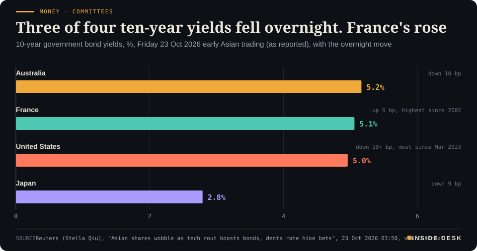
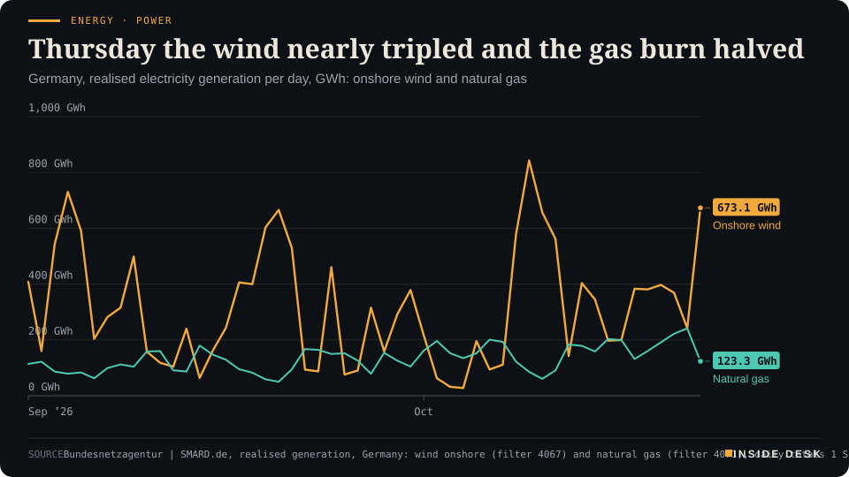
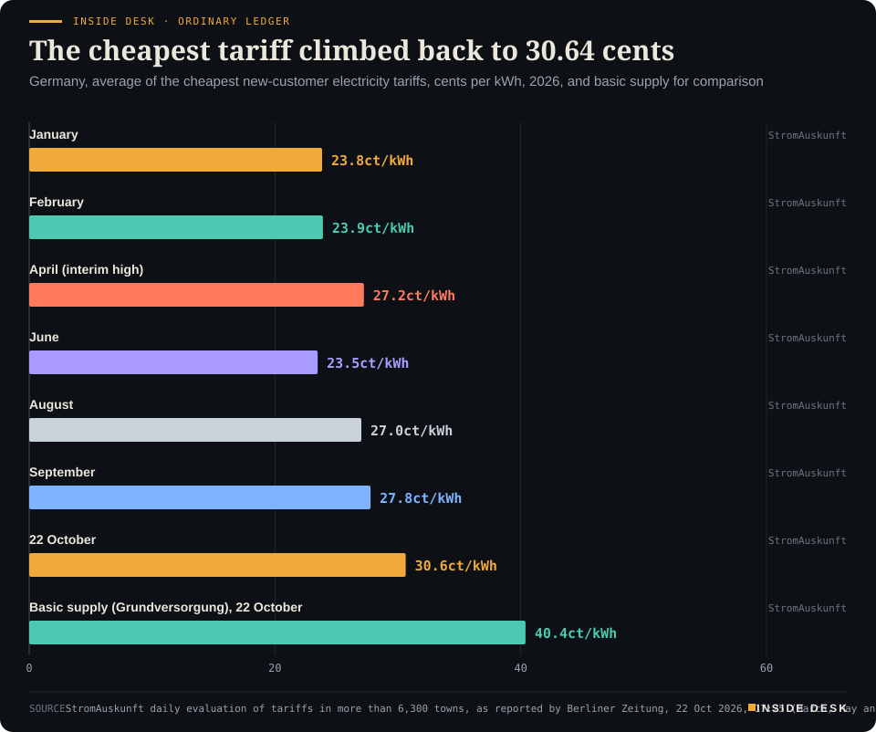
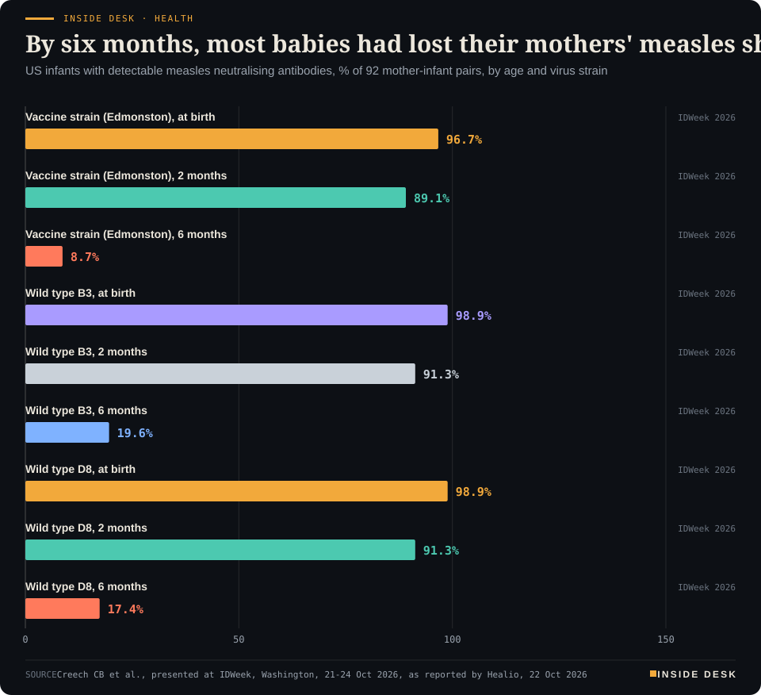
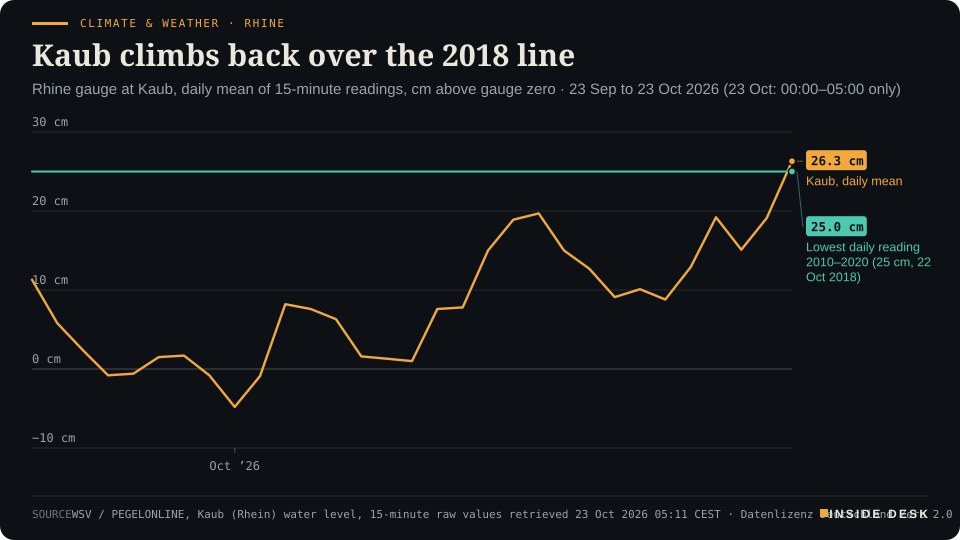
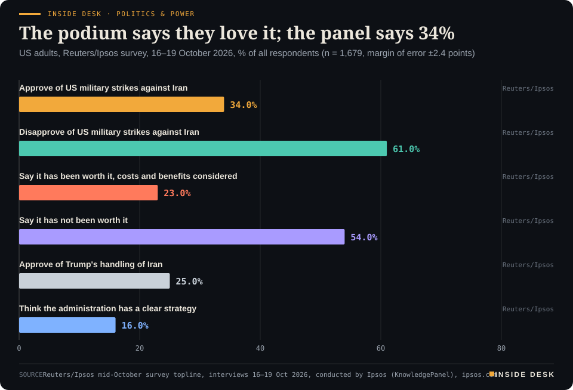

Inside Desk ePaper, Morning ePaper · Fri 23 Oct 2026
Friday, 23 October 2026Always free
Inside Desk
Morning ePaperAvailable 08:40 CEST · Berlin
Lead · Money, FX & Committees
Three central banks meet next week. On Thursday a tech sell-off did some of their deliberating for them: the biggest Treasury rally since March 2023, a stronger yen, and half a hike priced out. France was the exception.
Tech shares had their worst day since June, and the long rate fell further than it has since March 2023. The wind cut Germany's power price by a third, the Rhine at Kaub climbed back over its 2018 low, and a poll answered the podium. Eleven desks, every number sourced.
When tech shares fell, bonds caught the drop; in Germany the wind cut the wholesale power price by about a third in two days, and the Rhine at Kaub climbed back over its 2018 low.
Geo-economics · p. 5
Markets & Macro · p. 6
Energy & Industry · p. 10
Climate & Weather · p. 16
The day in one sentenceWhen tech shares fell, bonds caught the drop; in Germany the wind cut the wholesale power price by about a third in two days, and the Rhine at Kaub climbed back over its 2018 low.
ContentsInside Desk · Morning ePaper23 October 2026
Tech shares had their worst day since June, and the long rate fell further than it has since March 2023. The wind cut Germany's power price by a third, the Rhine at Kaub climbed back over its 2018 low, and a poll answered the podium. Eleven desks, every number sourced.
11 edition pieces · 11 desks · Available 08:40 CEST, 23 October 2026
21 ePaper extras, added , 23 October. They appear only in the ePaper and carry their own time.
17:30 Evening ePaper, updated live until 22:30 with an “Updated” time and a Latest page
Sun 10:00 The Sunday Magazine
Berlin time. Every issue is free.
How to read it
Swipe, use the arrow keys or the page strip. Tap any headline for the reading view. Press / to search, t for contents, +/− to zoom. Download the PDF.
LeadInside Desk · Morning ePaper23 October 2026
Money, FX & Committees · Lead · 3 min
Three central banks meet next week. On Thursday a tech sell-off did some of their deliberating for them: the biggest Treasury rally since March 2023, a stronger yen, and half a hike priced out. France was the exception.
Next week three committees sit down. The Federal Reserve meets, the European Central Bank is expected to hold its deposit rate at 2.5%, and the Bank of Japan decides on Friday4. On Thursday, before any of them had opened a briefing book, the bond market held its own meeting, and it voted for less.
The trigger was an invoice, not a speech. Meta reported negative free cash flow of $2.12 billion for the third quarter and raised the bottom of its full-year capital spending range to $135 billion, from $130 billion; the price of insuring its five-year debt reached an all-time high, CNBC reported3. Reuters called it the company’s first cash outflow in more than a decade1. The Nasdaq Composite fell 2.6%, its worst day since June, and the S&P 500 1.2%, its worst since July2.
The bond vote. Money went where it usually goes when shares fall: into US Treasuries. The 10-year yield fell more than 19 basis points overnight, the biggest drop since March 2023, before steadying at 4.9591% on Friday, back below 5%1. The 2-year yield fell nearly 19 basis points to 4.6566%1. The 2-year is the committee’s yield, the one that moves with expectations for the Fed, and it moved as much as the long one.
That is where the committee arithmetic changed. Markets “sharply pared back” expectations of further Fed tightening, stripping out almost a full quarter-point hike for next year, Reuters reported; a December rise is no longer fully priced, with the implied probability down to 85%1. ING’s analysts put it plainly: “The risk-off environment takes pressure off the Fed to hike next week”4.
The currency vote. The yen strengthened to 156.28 per dollar, its strongest in more than a month, and was set for a 1% gain on the week4. The dollar index was at 101.52, near its lowest since the start of the month, and the Swiss franc held near its firmest in a month at 0.8199 per dollar4. OCBC’s analysts, quoted by Reuters, sorted the havens by fear: AI jitters favour the yen, oil fears favour the Canadian dollar and the Norwegian crown, and French fiscal stress favours the franc4.
The exception. Not every ten-year bond was a refuge. France’s benchmark yield rose another 6 basis points overnight to 5.0601%, its highest since 2002, while Japan’s fell 9 basis points to 2.790% and Australia’s 10 basis points to 5.164%1.
LeadInside Desk · Morning ePaper23 October 2026
Money · CommitteesThree of four ten-year yields fell overnight. France's rose10-year government bond yields, %, Friday 23 Oct 2026 early Asian trading (as reported), with the overnight move

Bar chart of 10-year government bond yields in early Asian trading on Friday 23 October 2026, as reported by Reuters: Australia 5.164%, down 10 basis points; France 5.0601%, up 6 basis points overnight to its highest since 2002; the United States 4.9591%, after a fall of more than 19 basis points, the biggest since March 2023; Japan 2.790%, down 9 basis points. France is the only one of the four that rose.
Source: Reuters (Stella Qiu), "Asian shares wobble as tech rout boosts bonds, dents rate hike bets", 23 Oct 2026 03:50, via Euronext · CSV
Desk arithmetic: on Friday morning’s figures, France paid about 10 basis points more than the United States to borrow for ten years. The euro, at $1.122, was held back by the same worry4. A safe haven is not a nationality. It is a budget that markets believe will pass.
Tokyo’s homework. Japan handed its committee a fresh number on Friday. Core consumer prices, excluding fresh food, rose 2.1% in September from a year earlier, up from 1.7% in August; the measure that also strips out energy, which the BOJ watches closely, rose 2.4%5. Most economists polled by Reuters expect the Bank of Japan to hold next Friday and raise rates by a quarter point in December4. That is a poll, not a decision, and the desk records it as one.
What this is not. It is not a verdict on the economy. Brent settled at $113.17 on Thursday, its highest since May2, and expensive oil does not make committees relax. ING expects the 10-year yield to “snap back above (5%)” eventually, citing inflation, the deficit and the AI boom1. A single session can move a probability; it cannot write a minute.
Here is the constructive part, and it is a dull one. “US Treasury bonds are — gasp — working as your hedge again,” wrote Nomura’s Charlie McElligott1. The word that matters is “again”. On Thursday shares and bonds parted company, and the mechanism that is supposed to cushion a household’s pension when shares slide did roughly what it says on the tin. Lower long yields also lifted the shares of homebuilders and regional banks, CNBC reported2, which is how a bond rally eventually reaches a mortgage quote.
Next week the committees will read the same screens you have read here, plus the data you have not: wages, prices, order books. They do not need to agree with Thursday’s vote. They only need to explain theirs. Nothing here is advice.
Geo-economicsInside Desk · Morning ePaper23 October 2026
Geo-economics · 2 min
Washington published the rulebook for American money going into Chinese, Russian, Iranian, Cuban and North Korean technology. It is not a ban on everything. It is a form, a list and a deadline, which is how serious policy usually arrives.
On Thursday the US Treasury published a notice of proposed rulemaking for its Outbound Investment Security Program1. It turns the COINS Act, passed with the 2026 defence authorisation, into regulations1. The idea is narrow. It is not about trade in goods. It is about American capital, and the know-how that travels with it, flowing into technologies that could help a rival’s military, surveillance or cyber capabilities1.
What it does. US persons would have to notify Treasury of some investments and would be barred from others1. Five countries are covered: China, Cuba, Iran, North Korea and Russia2. Congress named five sectors: semiconductors and microelectronics, AI systems, quantum, high-performance computing and hypersonics. Treasury has added a sixth, biotechnology1. In AI, covered investments in those countries would be banned outright2. Treasury’s reason is candid: after two years of rapid progress, it doubts anyone can reliably “distinguish the most advanced models”2.
What it does not do. It does not ban all investment in those countries2. Investments in publicly traded companies are excepted, as are deals worth less than $50,000. Investors can also ask for exemptions in the US national interest2. Licensing deals by US drugmakers with China are not included, a Treasury official said, which meets a key request from the industry2. One name has left the list: Venezuela. Treasury says Maduro’s government “no longer exists”2.
Why it matters to you. If your pension fund, or a fund you hold, invests in private Chinese tech, the change shows up as compliance work long before anything is sold. Investors must make a “reasonable and diligent inquiry” before a deal, and the rule sets penalties for violations1. Assistant Secretary Chris Pilkerton put it this way: “It’s not just about the money. It’s about the network, the supply chain”2. Nothing here is advice.
The dull part, which is the good part. Comments are open until 7 December2. Only the final rule will set an effective date1. That is slower than a tweet and much harder to reverse. In a year of waivers announced from podiums, a rule with a docket, a deadline and a definitions section counts as stability.
Geo-economics · Short item · ePaper extra, added
The world's largest oil exporter has learned the lesson every household learns after a power cut: keep some of the supply somewhere else.
Saudi Arabia and Aramco are looking for partners to expand oil storage outside the kingdom, chief executive Amin Nasser told Al Arabiya Business on Thursday1. His reason: the Iran war has exposed weak points in the kingdom’s energy network1. Aramco is also studying more export routes, because Hormuz, Bab al-Mandab and Suez have all proved vulnerable1.
The figures behind this are large. …
Geo-economics · Brief · ePaper extra, added
On Thursday Israel’s defence ministry sanctioned Coral Oil, a UK-registered energy company. The ministry says Coral Oil transferred about 130,000 litres of fuel to Al-Amana, a fuel company owned by Hezbollah1. It describes Coral Oil as a Lebanese company controlled by the Yamin family, linked to firms worth hundreds of millions of dollars1. Its argument is logistical: fuel moves weapons, runs generators and keeps underground sites working1. Whether the listing bites depends on banks and shippers outside Israel, not on the announcement.
Markets & MacroInside Desk · Morning ePaper23 October 2026
Markets & Macro · 2 min
The Nasdaq had its worst day since June after Meta's cash flow turned negative. The Dow closed flat, and Nvidia's chief said out loud what the bond market was pricing: money for the AI build-out is no longer unlimited.
Thursday’s sell-off had a clear invoice behind it. Meta reported negative free cash flow of $2.12 billion for the third quarter and raised the floor of its full-year capital spending range to $135 billion; its shares fell almost 7% and the spread on its five-year credit default swaps reached an all-time high2. Revenue still grew 26%, to $64.60 billion, ahead of forecasts2. Investors were not doubting that Meta sells advertising. They were doubting how long it can spend faster than it earns.
The doubt spread down the supply chain. The US technology sector fell 3%; Nvidia lost 4.4%, Alphabet 3.2% and Advanced Micro Devices 8.1%1. Tesla fell 3.1% after cutting its 2026 capital spending plans3. The Nasdaq Composite fell 2.6%, its worst day since June, and the S&P 500 1.2%, its worst since July1. The Dow Jones Industrial Average, heavier in banks and industrials, closed marginally higher1.
The most useful sentence of the day came from a seller of the shovels. “There’s a scarcity of capital. The demand [for] the capital is much greater than the availability of the capital,” Nvidia’s Jensen Huang told CNBC, speaking about the smaller cloud companies of the AI build-out1. Ed Yardeni called the AI trade a “bubble” but added: “Taking some air out of the AI bubble is a good thing. I don’t think it’s going to burst and create problems for the economy”1. That is a view, not a forecast the desk endorses; it is a fair description of what a correction is for.
Asia took the baton on Friday. Japan’s Nikkei fell 1.3% and was down 5% on the week; South Korea’s KOSPI fell 1.7%, on course for a 4.3% weekly loss; an index of mainland Chinese blue chips hit its lowest since July 20253. Taiwan’s market was closed for a typhoon3. US stock futures, by contrast, were roughly flat on Thursday evening1.
The calm reading is in the weekly numbers. The S&P 500 was still heading for a slim gain on the week and the Dow for a 1.7% rise1. A market that sells the biggest spenders and keeps the rest is not panicking. It is doing the dull job it exists for: asking who pays for the build-out, and at what price. Nothing here is advice.
Markets & Macro · Short item · ePaper extra, added
The S&P 500 fell 1.2% on Thursday. The companies that live on borrowed money rose, because the price of borrowing fell.
Underneath Thursday’s tech sell-off ran a second, quieter trade. The 10-year Treasury yield fell 18.5 basis points to 4.961%, the largest one-day decline since March 2023, and the 30-year yield fell 15 basis points, CNBC reported1. The shares most sensitive to the cost of borrowing moved accordingly.
The State Street SPDR S&P Homebuilders ETF rose 3.8%, the regional banking ETF 2.5% and the Vanguard Real Estate ETF 1.3%, all well ahead of the S&P 500, which fell 1.2%1. Homebuilders sell houses that buyers finance with mortgages; regional banks lend against them; property trusts borrow to own buildings. When the long rate falls, all three see their arithmetic improve on the same afternoon.
This is the transmission belt that committees talk about and rarely get to show. …
Markets & Macro · Brief · ePaper extra, added
SK Hynix shares fell 8% in Seoul on Friday morning after the chipmaker said its US subsidiary Solidigm “will halt its review of potential pre-IPO and IPO options,” CNBC reported1. The company cited recent capital market conditions and share price trends, and said it is exploring other ways to fund a new US chip plant for AI memory1. A listing is a window, and windows close when prices fall. The plant still needs paying for; only the route to the money has changed.
Politics & InstitutionsInside Desk · Morning ePaper23 October 2026
Politics & Institutions · Podium vs Print · 2 min
Asked how Americans feel about the Iran war, the president said that in one way they love it. The most recent Reuters/Ipsos panel, interviewed three days earlier, found a third approving of the strikes. He did leave himself a second sentence.
Podium
“Well, in one way they love it because I'm doing what should have been done by other presidents. And in another way maybe they don't.”
Donald Trump, President of the United States, to reporters at the White House, 22 October 2026 (Washington time)
Print34% approve of US military strikes against Iran, 61% disapprove
Among 1,679 US adults, 34% approve and 61% disapprove of the strikes; 23% say the action has been worth it, 54% say it has not.
Reuters/Ipsos mid-October survey, conducted by Ipsos, Interviews 16–19 October 2026
The podium. On Thursday at the White House, Donald Trump was asked about public reaction to the Iran war. “Well, in one way they love it because I’m doing what should have been done by other presidents,” he said. “And in another way maybe they don’t.” He called the conflict “a price to pay” to stop Iran getting a nuclear weapon: “we can’t let Iran have a nuclear weapon”1.
The print. The latest Reuters/Ipsos survey interviewed 1,679 US adults from 16 to 19 October, with a margin of error of plus or minus 2.4 points2. Asked whether they approve of US military strikes against Iran, 34% said yes and 61% said no2. Weighing costs and benefits, 23% said the action has been worth it and 54% said it has not2. A quarter, 25%, approve of the president’s handling of Iran. Just 16% think the administration has a clear strategy, against 58% who think it does not2. And 78% expect US involvement to go on “for an extended period”, against 16% who expect it to end within weeks2.
Politics & Institutions · Short item · ePaper extra, added
Austria's smaller offer may matter more.
Friedrich Merz urged the six Western Balkan states on Thursday to move faster towards the EU; Austria’s chancellor, Christian Stocker, offered them the EU roaming zone and SEPA payments1.
Politics & InstitutionsInside Desk · Morning ePaper23 October 2026
Senate Democrats plan to examine the administration’s deal easing sanctions on Russian diesel, a Senate Democratic aide told The Washington Post1. The Senate Foreign Relations Committee has asked companies involved to preserve their documents ahead of a possible inquiry1. Earlier this month the president waived the sanctions until April1. A preservation letter is not a verdict. It is the paper trail being kept.
Psychology & BehaviourInside Desk · Morning ePaper23 October 2026
Psychology & Behaviour · 2 min
Two large family studies find that a child's aggression predicts less consistent discipline later, not the other way round. It is a finding that lifts some blame and asks for better help.
The usual story about difficult children runs one way. Parents who enforce rules unevenly get children who hit, defy and shout. A study published in Nature Communications, led by Joanna K. Bright of King’s College London, tested that story against two large, genetically informative samples, and the arrow mostly pointed the other way1.
The two samples. The first is Norway’s Mother, Father and Child Cohort, with extended-family data on 53,532 children born to 42,538 mothers, assessed at age five1. The second is the US Early Growth and Development Study: 561 adoption triads of an adopted child, the adoptive parents and the birth parents, followed from 4.5 to 8 years1. Adoptive parents share no genes with the child, which lets you see the family environment without inheritance getting in the way1.
What they found. In Norway, about 47% of the modest link between inconsistent discipline and aggression came from shared genes; the rest pointed from child to mother, with no significant path from discipline to aggression1. The adoption study agreed: a child’s aggression predicted more inconsistent discipline at later ages, while mothers’ discipline did not significantly predict later aggression1. The authors write that “childhood aggression drives inconsistent parenting beyond shared genetic influences”1. The link between warm, positive parenting and lower aggression was, in Norway, fully explained by shared genes1.
The caveats. The measures were narrow and mostly mothers’ reports; the families were relatively advantaged; the data are 10 to 23 years old1. With fathers’ own reports, the influence ran both ways at the same age1. And when one parent rated the child and the other rated the parenting, the links vanished, which hints that one person reporting both inflates them1.
The constructive reading. None of this says parenting does not matter. It says a parent worn down by a child who pushes back is not simply the author of the pushing. The authors suggest that programmes that only coach consistent discipline “may be insufficient”1. Help that works with the child’s behaviour as well as the parent’s is a less tidy message, and probably a kinder one. Nothing here is advice.
Psychology & Behaviour · Short item · ePaper extra, added
In 2,009 cognitively healthy older adults, depression went with a slightly smaller part of the hippocampus. Amyloid and tau did not explain it.
The hippocampus is not one thing. A study in Translational Psychiatry, led by Danielle Luu of the University of Southern California, measured three of its subfields in 2,009 cognitively unimpaired adults aged 50 to 90, recruited among Hispanic, Black and white residents through the University of North Texas1. Of these, 630 were classed as having depression1.
Depression went with a smaller composite region (CA2, CA3 and the dentate gyrus), but not with the CA1 or the subiculum1. The association was small and held after accounting for body mass index, physical activity, tau and the APOE4 risk gene1. With amyloid added it lost significance but kept its size, which the authors put down to fewer amyloid scans1. …
A preregistered University of Barcelona study in Psychological Medicine scanned 116 naturally cycling women aged 18 to 35 during an approach-avoid task1. Higher salivary progesterone went with less distinct activity patterns in the lateral frontal pole and striatum, with correlations of about −0.251. Neither hormone was linked to speed or accuracy on the task, and estradiol showed no link at all1. An indirect path to worse recent mood explained 7.1% of its variation1. “Progesterone is certainly not a master switch,” said the lead author, Macià Buades-Rotger1. A small, careful result is worth more than a large stereotype.
Energy & IndustryInside Desk · Morning ePaper23 October 2026
Energy & Industry · 2 min
Brent settled at its highest since May on Thursday. The same day, German turbines nearly tripled their output, gas plants burned half as much as on Wednesday, and Friday's power cleared at €137.59.
On Thursday Brent crude jumped 4% to settle at $113.17 a barrel, its highest settlement since May, after a report that the US and Israel were drawing up plans for renewed attacks on Iran2. On Friday morning in Asia it barely moved, at $112.963. That is the headline. The German grid wrote a different one.
Onshore wind turbines in Germany generated 673.1 gigawatt hours on Thursday 22 October, up from 242.3 GWh on Wednesday, according to the Bundesnetzagentur’s SMARD data1. It was the third-best wind day since the start of September. Gas-fired plants, which on Wednesday had burned their way to 241.4 GWh, the highest of the autumn so far, fell to 123.3 GWh1. Desk arithmetic: wind up about 2.8 times, gas down by about half, in one day.
Energy · PowerThursday the wind nearly tripled and the gas burn halvedGermany, realised electricity generation per day, GWh: onshore wind and natural gas

Line chart of daily electricity generation in Germany from onshore wind and from natural gas, 1 September to 22 October 2026, in gigawatt hours. Wind swings widely, from 27.4 GWh on 4 October to 842.9 GWh on 9 October. Gas runs lower and steadier, from 50.1 GWh on 20 September to 241.4 GWh on Wednesday 21 October, its highest of the period. On Thursday 22 October onshore wind generated 673.1 GWh, up from 242.3 GWh the day before and the third-highest day since 1 September, while gas fell to 123.3 GWh, about half of Wednesday's total.
Source: Bundesnetzagentur | SMARD.de, realised generation, Germany: wind onshore (filter 4067) and natural gas (filter 4071), daily totals 1 Sep to 22 Oct 2026, retrieved 23 Oct 2026 05:15 CEST, values rounded to 0.1 GWh · CC BY 4.0 · CSV
The auction followed the turbines. The day-ahead price for the Germany-Luxembourg zone, which had averaged €211.94 per megawatt hour for Wednesday’s delivery, cleared at €148.61 for Thursday and €137.59 for Friday1. Desk arithmetic: Friday’s power is about 35% cheaper than Wednesday’s, in a week when oil rose.
Do not over-read it. …
Energy & Industry · Short item · ePaper extra, added
Asia is paying near four-year highs and still importing more. Europe, with emptier stores, is importing less.
Europe’s imports of liquefied natural gas are estimated at 9.11 million tonnes for October, up from 7.76 million in September but down from 10.59 million in October 2025, according to Kpler data cited in a Reuters column1. That extends a run of months this year with weaker imports than in the same months of 20251.
The buyers are elsewhere. Asia’s October arrivals are estimated at 23.31 million tonnes, the most since July, with China taking 5.47 million, even though spot LNG for north Asia reached $29.30 per million British thermal units in the week to 16 October, the highest since December 2023 and almost triple the $10.40 of late February1. …
Energy & Industry · Brief · ePaper extra, added
In early Asian trade on Friday, Brent crude futures stood at $112.96 a barrel and US West Texas Intermediate at $98.12, Reuters reported1. Desk arithmetic: a gap of $14.84. Brent, which settled on Thursday at its highest since 4 May, is set for a third successive weekly gain; WTI is on track to end two weeks of gains and finish the week lower1. The difference is geography. Brent prices the barrels that pass the Gulf and the Red Sea; WTI prices the ones that do not have to. Nothing here is advice.
Money, FX & CommitteesInside Desk · Morning ePaper23 October 2026
Money, FX & Committees · Short item · ePaper extra, added
Inside Japan's 2.1% inflation print are two record moves in opposite directions, and a subsidy bill that took 0.82 points off the total.
Japan’s statistics bureau published September’s consumer prices on Friday, and the headline, 2.1% excluding fresh food, hides a busy shopping basket1. Green tea rose 33.8% on a year earlier, the steepest rise since comparable records began in 1971, as growers shifted production to meet demand for matcha, Nikkei reported1. Saury, after poor catches, rose 27.8%; toilet paper 17.8%; mobile phones 10.9%1.
Rice went the other way. After last year’s surge, rice prices fell 20.6%, the biggest drop since January 1971, Jiji Press reported2. Accommodation rose because of how the holidays fell, and the end of Tokyo’s free basic water charge pushed the index up too2.
The quietest line is the policy one. The abolition of the old provisional petrol tax rate and subsidies for electricity and gas took 0.82 percentage points off the inflation rate, Nikkei calculated1. Electricity bills fell 2.4% and petrol 2.6%; the government subsidises refiners to hold regular petrol at about ¥170 a litre1.
Desk arithmetic: add the 0.82 points back and the rate would have been about 2.9%. That is the number a central bank has to look through, and the one a household does not see until the subsidy ends. Nothing here is advice.
Money, FX & Committees · Brief · ePaper extra, added
Thursday’s flight to safety skipped the metal that is supposed to be its destination. Gold fell nearly 3% overnight and was flat at $4,021.99 an ounce in Asia on Friday, Reuters reported, while Treasuries had their biggest daily rally in more than three years and the yen and Swiss franc gained1. Safety, it turns out, is not one asset but a ranking, and on Thursday the ranking favoured things that pay interest. The order can change; the lesson is that no shelter is guaranteed. Nothing here is advice.
Ordinary & Inherited LifeInside Desk · Morning ePaper23 October 2026
Ordinary & Inherited Life · 2 min
The cheapest new-customer electricity tariffs in Germany rose about ten per cent in a month, to 30.64 cents a kilowatt hour. Basic supply still sits almost ten cents above them.
The comparison portal StromAuskunft evaluates tariffs in more than 6,300 German towns every day. On Thursday its average for the cheapest new-customer electricity tariffs reached 30.64 cents a kilowatt hour, up just over ten per cent on the month and 13.6% on the year, Berliner Zeitung reported1.
The curve. The year started cheap. In January the figure was 23.84 cents, in February 23.90, helped by €6.5 billion of federal subsidy for the transmission grid charges1. It touched 27.24 cents in April, fell back to 23.47 in June, then climbed: 27.03 in August, 27.78 in September, 30.64 now1. The reason given is procurement costs: the Iran war and the Hormuz blockade pushed the European gas price at times to €59 a megawatt hour, and gas plants often set the power price1.
Inside Desk · Ordinary LedgerThe cheapest tariff climbed back to 30.64 centsGermany, average of the cheapest new-customer electricity tariffs, cents per kWh, 2026, and basic supply for comparison

Bar chart: the average cheapest new-customer electricity tariff in Germany was 23.84 cents per kWh in January and 23.90 in February, 27.24 in April, 23.47 in June, 27.03 in August, 27.78 in September and 30.64 cents on 22 October 2026, the latest value. Basic supply averaged 40.39 cents on 22 October.
Source: StromAuskunft daily evaluation of tariffs in more than 6,300 towns, as reported by Berliner Zeitung, 22 Oct 2026, 17:25 (March, May and July not reported) · CSV
The default. Basic supply, the tariff you are on if you never chose one, averages 40.39 cents, almost ten cents more1. At 3,500 kilowatt hours a year that is about €1,414 against €1,072 in the cheapest tariff, a gap of roughly €3411. In Thuringia, basic supply averages 51.73 cents against 30.26 for the cheapest offer, more than €751 a year apart1. …
Ordinary & Inherited Life · Short item · ePaper extra, added
Brent edged up overnight; the German average for a 3,000-litre order did not move. The three-month view is where the bill sits.
A hundred litres of heating oil cost €172.71 on the German average on Friday morning, for a 3,000-litre order, according to HeizOel241. The portal shows the change on the previous day as 0.00%1.
The longer view. That is €3.42 more than a week ago and €38.67 more than three months ago1. The three-year range runs from €85.59 on 1 June 2025 to €179.02 on 16 September 2026; the average over that period is €104.831. Desk arithmetic: a 3,000-litre delivery costs about €5,181 at today’s average, some €1,160 more than three months ago, and about €189 below the September high.
Ordinary & Inherited Life · Brief · ePaper extra, added
At 05:11 on Friday, the stations open across Germany averaged €2.078 a litre for Super E10, €2.133 for E5 and €2.240 for diesel, based on reports to the federal fuel market transparency unit1. Among the Länder, Saarland had the cheapest E10 at €2.032 and North Rhine-Westphalia the dearest at €2.1291. ADAC’s Wednesday national averages were €2.110 for E10 and €2.255 for diesel; night and day prices differ, so the two are not a like-for-like change1,2. ADAC says prices are usually lowest shortly before noon2. Desk arithmetic: diesel is 16.2 cents above E10 this morning. Nothing here is advice.
Tech & ComputeInside Desk · Morning ePaper23 October 2026
Tech & Compute · 2 min
Revenue up 55%, and most of the extra dollars fell straight through to operating profit. The release says why in four words: exabyte growth, improved pricing.
The document. Western Digital, which makes the hard drives that fill cloud and AI data centres, published its fiscal first-quarter results on Thursday evening, for the three months to 2 October1. It is a short release with two tables, an outlook box and a dividend line. Read slowly, it is a lesson in what scarcity does to a manufacturer’s accounts.
The headline. Revenue was $4.38bn, up 55% on a year earlier and 17% on the quarter1. Non-GAAP earnings per share were $4.64, up 161%1. FactSet’s consensus had been $4.14bn and $4.11 a share, SquawkNews reported2. Chief financial officer Kris Sennesael named the cause plainly: “robust exabyte growth and improved pricing”1. More storage sold, at better prices.
The margin line. GAAP gross margin rose to 57.8% from 43.5% a year earlier; operating margin to 46.7% from 28.1%1. Desk arithmetic on the non-GAAP table: revenue rose by $1,563m year on year, operating income by $1,297m. About 83 cents of every extra dollar of sales reached operating profit. That is not what volume alone does. It is what price does when the factories already exist.
The line that fell. GAAP diluted earnings per share fell 44% on the quarter, to $4.63 from $8.211. That is not a bad quarter. Last quarter’s GAAP net income of $3.20bn sat $1.81bn above its non-GAAP figure of $1.38bn, Desk arithmetic on the release’s own table; this quarter the two are the same, $1.78bn1. A one-off flattered the comparison base. The release prints both columns side by side, which is how it should be done.
The cash. Operating cash flow was $1.60bn and free cash flow $1.38bn1. The board raised the quarterly dividend 17%, to $0.175 a share, payable on 17 December1.
The outlook. WD guides fiscal second-quarter revenue to $5.1bn, plus or minus $100m, which it says is 66% to 72% above a year earlier, with a non-GAAP gross margin of 60–61%1. Guidance is the company’s, not ours.
The constructive reading. The AI story usually gets told through chips. This release tells it through the boring part: somewhere the data has to be kept, and the people who make the drives are, for now, being paid properly for them. Nothing here is advice; it is a reading of a company’s own release.
Tech & Compute · Short item · ePaper extra, added
Units under management grew 8%. Revenue grew 19%. The difference sits in a line called value added services.
AppFolio sells software to landlords and property managers. On Thursday evening it reported third-quarter revenue of $296m, up 19% on a year earlier1. The number of rental units its customers manage on the platform grew 8%, to 9.8 million1.
The gap. Revenue grew more than twice as fast as units. The revenue table shows where: subscription fees rose to $61.5m from $53.8m, but “value added services” rose to $231.9m from $192.1m1. Desk arithmetic: those services, sold on top of the basic subscription, were 78% of revenue. The release does not break them down further1. What it does show is that the company earns most from what its customers do on the platform, not from the fact that they log in.
The margin. GAAP operating income rose 64% to $57m, 19.4% of revenue, from 14.1% a year earlier1. Research and development spending fell slightly, to $53.1m, while sales and marketing rose to $48.6m1. AppFolio raised its full-year revenue range to $1.122bn–$1.127bn1.
The reading. This is dull machinery in its purest form: back-office software behind millions of rented homes whose tenants never see it. Its revenue grows faster than its unit count because each unit is worth more to it each year. Nothing here is advice.
Health & CareInside Desk · Morning ePaper23 October 2026
Health & Care · 2 min
A study at IDWeek finds most US babies have lost detectable measles antibodies from their mothers by six months, half a year before the routine first dose. Public health labs, meanwhile, are asking for a faster test.
A baby is born with its mother’s antibodies, and for decades that borrowed protection was one reason the first measles shot waits until 12 to 15 months in the United States1. A study presented this week at IDWeek in Washington suggests the loan runs out much sooner1.
The numbers. C. Buddy Creech of Vanderbilt and colleagues used leftover samples from 92 mother-infant pairs1. At birth, 96.7% of infants had detectable neutralising antibodies against the vaccine strain; at two months, 89.1%; at six months, 8.7%1. Against two common wild strains, B3 and D8, the six-month figures were 19.6% and 17.4%1. Antibody concentrations against the vaccine strain fell from 1,173 to 65 mIU/mL over the six months1.
Inside Desk · HealthBy six months, most babies had lost their mothers' measles shieldUS infants with detectable measles neutralising antibodies, % of 92 mother-infant pairs, by age and virus strain

Bar chart: the share of 92 US infants with detectable measles neutralising antibodies was 96.7% at birth, 89.1% at two months and 8.7% at six months for the vaccine strain; 98.9%, 91.3% and 19.6% for wild type B3; and 98.9%, 91.3% and 17.4% for wild type D8.
Source: Creech CB et al., presented at IDWeek, Washington, 21-24 Oct 2026, as reported by Healio, 22 Oct 2026 · CSV
Why now. The schedule was set when many mothers had immunity from infection, which passes more antibody to the baby1. …
Health & Care · Short item · ePaper extra, added
Ebola reached an eighth Congolese province. Researchers are testing whether a vaccine made for the Zaire strain protects against Bundibugyo, and do not yet know.
The Bundibugyo Ebola outbreak in Congo has reached Nord Ubangi, an eighth province, on the border with the Central African Republic, where armed violence keeps uprooting people1. …
Health & Care · Brief · ePaper extra, added
Kenya has reported nine Bundibugyo Ebola cases, including one death earlier this month of a Kenyan who had worked in Congo and flew home via Entebbe1. “Immediately after, we commenced on contact tracing,” said Patrick Amoth, director general of Kenya’s health ministry: 135 contacts were traced “and we have been able to account for them, 100 per cent”1. The WHO’s Mohamed Janabi put the general rule plainly: “success is possible where surveillance is strong, where contacts are found and followed”1. A list with no missing names is the dullest and best news an outbreak can produce.
Security & OrderInside Desk · Morning ePaper23 October 2026
Security & Order · 2 min
Overnight both capitals talked about going further. Tehran named airports and pipelines; Washington said it 'may do it a little bit further'. The number that limits both is not in any speech: how many interceptors are left on the shelf.
Late on Thursday, Washington time, Donald Trump said at the White House that the US had “knocked the hell out of them, and we may do it a little bit further”1. A few hours later the Wall Street Journal reported Tehran’s answer, given in public and through private channels. If the US and Israel resume their air campaign, Iran would widen its strikes to airports, pipelines and other civilian and economic targets in neighbouring Gulf states1. The warnings, the paper said, are meant to deter1.
The ledger so far. The warning is believable because of what has already happened. According to the WSJ report, in the war’s first phase Iran hit US bases, embassies and the Fifth Fleet headquarters in Bahrain. It struck energy and industrial sites in the UAE, a major gas plant in Qatar and airports in Dubai, Kuwait and Bahrain1. At sea, the IMO counts 120 confirmed incidents and 24 seafarer deaths as of 22 October2. October already holds the record month, with 27 attacks on commercial ships3. On Thursday night the Saudi-led coalition said it had intercepted a Houthi ballistic missile fired at Riyadh1.
The binding constraint. The most useful line in the report is not a threat. It is about stock. US and Arab militaries face declining stocks of air-defence interceptors, the Journal reported, and Israel’s supplies are also under pressure. Meanwhile Iran is believed to have resumed limited ballistic-missile production from stockpiled parts1. Every threat in this war is ultimately backed by an inventory, and shelves run down before rhetoric does.
What else is moving. Not everything points up. Iraq told Riyadh it would not let its territory be used for attacks on the kingdom1. On Friday, Turkey hosts foreign ministers from Saudi Arabia, Egypt, Pakistan, Britain, France and Germany for security talks that include Hormuz1. Neither will stop a missile. Both are the kind of slow, procedural work that makes the next missile less likely.
For you. Read Iran’s list and Trump’s “a little bit further” as bargaining positions stated in public, not as timetables. The figures worth following are the IMO’s confirmed count2 and any hard number on interceptors. Speeches do not change those figures. Events do.
Security & Order · Short item · ePaper extra, added
Before Saturday's marches, the justice ministry published its count from the last ones. Half of those detained had never been in trouble before, and that is the more troubling number.
France’s justice minister, Gérald Darmanin, said on Thursday that 217 people had been jailed after fast-track trials over last weekend’s disorder, and that the number will rise1. He said 2,700 people had been arrested across France and more than 1,000 had appeared in court. Half of those detained had no prior criminal record, he said, as reported by Le Figaro1.
The weekend rules are now set city by city. In Paris, the curfew in Place de la République and Les Halles, 23:00 to 06:00, is extended until Monday1. Marseille will suspend public transport on Saturday. …
Security & Order · Brief · ePaper extra, added
In a Tuesday memo reviewed by The Washington Post, Defense Secretary Pete Hegseth barred service members and department staff from seeking personal gain from non-public military information, classified or not1. He named Polymarket and Kalshi. “Our enemies watch movements in these markets,” the memo says; a trade on a military outcome “creates a signal”1. The Post notes it is unclear whether contractors are covered1. A rule that names the platform is a rule people can follow.
Climate & WeatherInside Desk · Morning ePaper23 October 2026
Climate & Weather · 2 min
For a month every daily mean at the Rhine's bottleneck sat below the low of its reference decade. At 23:45 on Thursday the gauge read 26 cm. By 05:00 it read 28.
Yesterday this desk reported that the Rhine gauge at Kaub had spent a month below 25 cm, the lowest daily reading of its 2010–2020 reference period, set on 22 October 20182. Overnight the line was crossed. At 23:45 on Thursday the gauge read 26 cm, its first reading at or above 25 cm in the 32 days of data the federal waterways administration publishes1. At 05:00 on Friday it read 28 cm1.
Climate & Weather · RhineKaub climbs back over the 2018 lineRhine gauge at Kaub, daily mean of 15-minute readings, cm above gauge zero · 23 Sep to 23 Oct 2026 (23 Oct: 00:00–05:00 only)

Line chart of the Rhine water level at the Kaub gauge from 23 September to 23 October 2026, as daily means of 15-minute readings in centimetres above the gauge zero, against a flat line at 25 cm, the lowest daily reading of the 2010–2020 reference period, set on 22 October 2018. Thirty daily means, 23 September to 22 October, sit below that line, five of them below zero, with the lowest at −4.8 cm on 1 October. The level recovers to 19.7 cm on 13 October, dips to 8.8 cm on 18 October and reaches 19.1 cm on 22 October. The last point, 23 October, covers only midnight to 05:00 and averages 26.3 cm, the first point above the line, with a last reading of 28 cm at 05:00.
Source: WSV / PEGELONLINE, Kaub (Rhein) water level, 15-minute raw values retrieved 23 Oct 2026 05:11 CEST · Datenlizenz Deutschland Zero 2.0 · daily means: desk arithmetic · CSV
The arithmetic. Desk arithmetic on the 15-minute readings: Thursday’s full daily mean came to 19.1 cm, still below the 2018 line, as every daily mean since at least 22 September has been1. Friday’s mean from midnight to 05:00 is 26.3 cm1. That is five hours, not a day, and the readings are raw data that can still be revised1. Discharge at Kaub was 555 cubic metres a second at 04:45, against 509 at 16:00 on Thursday2.
Upstream. The rise is not a local blip. At Mainz the gauge read 106 cm at 05:15 on Wednesday and 125 cm at 05:00 on Friday; at Maxau, near Karlsruhe, 295 cm and 306 cm3. Water at Kaub is water that passed those gauges first.
Climate & Weather · Short item · ePaper extra, added
No train runs in Normandy on Friday. The decision was taken on Thursday afternoon, in calm air.
Storm Austen reaches Normandy and Brittany on Friday with gusts that Météo-France expected at up to 140 km/h on the coast, and 15 départements are on orange alert1. The railway did not wait to find out. SNCF said no line in Normandy would run on Friday, with a gradual restart planned from 14:00 on Saturday, subject to safety checks on the track1. …
Climate & Weather · Brief · ePaper extra, added
The magnitude 7.0 earthquake that struck Baqen County in Nagqu at 22:33 Beijing time on Thursday has killed 16 people and injured 54, China’s emergency ministry said on Friday morning1. The epicentre, Maru township, lies about 70 km from the county seat, where power and telecoms were cut2. The national response was raised from level four to three1. Of 350 firefighters and 83 vehicles sent, 120 people had arrived by 06:30 local time; the rest were already inside Nagqu1.
Charts and dataInside Desk · Morning ePaper23 October 2026
Charts and data
Energy · PowerThursday the wind nearly tripled and the gas burn halvedGermany, realised electricity generation per day, GWh: onshore wind and natural gas
Line chart of daily electricity generation in Germany from onshore wind and from natural gas, 1 September to 22 October 2026, in gigawatt hours. Wind swings widely, from 27.4 GWh on 4 October to 842.9 GWh on 9 October. Gas runs lower and steadier, from 50.1 GWh on 20 September to 241.4 GWh on Wednesday 21 October, its highest of the period. On Thursday 22 October onshore wind generated 673.1 GWh, up from 242.3 GWh the day before and the third-highest day since 1 September, while gas fell to 123.3 GWh, about half of Wednesday's total.
Source: Bundesnetzagentur | SMARD.de, realised generation, Germany: wind onshore (filter 4067) and natural gas (filter 4071), daily totals 1 Sep to 22 Oct 2026, retrieved 23 Oct 2026 05:15 CEST, values rounded to 0.1 GWh · CC BY 4.0 · CSV
Climate & Weather · RhineKaub climbs back over the 2018 lineRhine gauge at Kaub, daily mean of 15-minute readings, cm above gauge zero · 23 Sep to 23 Oct 2026 (23 Oct: 00:00–05:00 only)
Line chart of the Rhine water level at the Kaub gauge from 23 September to 23 October 2026, as daily means of 15-minute readings in centimetres above the gauge zero, against a flat line at 25 cm, the lowest daily reading of the 2010–2020 reference period, set on 22 October 2018. Thirty daily means, 23 September to 22 October, sit below that line, five of them below zero, with the lowest at −4.8 cm on 1 October. The level recovers to 19.7 cm on 13 October, dips to 8.8 cm on 18 October and reaches 19.1 cm on 22 October. The last point, 23 October, covers only midnight to 05:00 and averages 26.3 cm, the first point above the line, with a last reading of 28 cm at 05:00.
Source: WSV / PEGELONLINE, Kaub (Rhein) water level, 15-minute raw values retrieved 23 Oct 2026 05:11 CEST · Datenlizenz Deutschland Zero 2.0 · daily means: desk arithmetic · CSV
Latest values
Series
Value
Date
Chart
Onshore wind
673.1 GWh
22 Oct 2026
Thursday the wind nearly tripled and the gas burn halved
Natural gas
123.3 GWh
22 Oct 2026
Thursday the wind nearly tripled and the gas burn halved
Kaub, daily mean
26.3 cm
23 Oct 2026
Kaub climbs back over the 2018 line
Lowest daily reading 2010–2020 (25 cm, 22 Oct 2018)
25.0 cm
23 Oct 2026
Kaub climbs back over the 2018 line
Last data point of each series in the charts above, from the Inside Desk data archive. Sources under each chart.
Back pageInside Desk · Morning ePaper23 October 2026
Before you close the tab
The day in one sentence
When tech shares fell, bonds caught the drop; in Germany the wind cut the wholesale power price by about a third in two days, and the Rhine at Kaub climbed back over its 2018 low.
One thing you can do this week
This week, find two lines on your electricity paperwork: the price per kilowatt-hour you actually pay and the date your contract can end. Write them down somewhere you will see them again. Today's Ordinary Ledger shows how far apart the cheapest new-customer tariff and basic supply can sit; knowing your own two numbers makes the next headline about tariffs easier to read.
A habit, not advice. Nothing here tells you what to buy, sign or switch.
What went right
Kenya says it traced 135 contacts of its first Ebola death and has accounted for all of them, "100 per cent" in the health ministry's words 1. Contact lists that close completely are the dull, decisive work of containment.
In euros at home
Heating oil costs €172.71 per 100 litres on Friday's German average for a 3,000-litre order, unchanged on the day, €3.42 more than a week ago and €38.67 more than three months ago 2. Desk arithmetic: a 3,000-litre delivery costs about €5,181 today, some €1,160 more than the same order three months ago.
Desk arithmetic on the cited average price. Local prices differ by region, quantity and supplier. Nothing here is advice.
Small words
Basis point
One hundredth of a percentage point, the unit bond markets use for small moves in interest rates. When the US ten-year yield fell by more than 19 basis points overnight, its biggest fall since March 2023, it dropped by roughly 0.19 of a percentage point; on Friday it stood at 4.9591% 3.
Commentary for information only. Not investment, legal, tax, medical or political advice. Inside Desk is free and reader-supported. Every number is sourced in the piece it appears in.
This issue has been updated.
All articles in this edition
Money, FX & Committees · 3 min read
The market met before the committees did
Three central banks meet next week. On Thursday a tech sell-off did some of their deliberating for them: the biggest Treasury rally since March 2023, a stronger yen, and half a hike priced out. France was the exception.
Next week three committees sit down. The Federal Reserve meets, the European Central Bank is expected to hold its deposit rate at 2.5%, and the Bank of Japan decides on Friday4. On Thursday, before any of them had opened a briefing book, the bond market held its own meeting, and it voted for less.
The trigger was an invoice, not a speech. Meta reported negative free cash flow of $2.12 billion for the third quarter and raised the bottom of its full-year capital spending range to $135 billion, from $130 billion; the price of insuring its five-year debt reached an all-time high, CNBC reported3. Reuters called it the company’s first cash outflow in more than a decade1. The Nasdaq Composite fell 2.6%, its worst day since June, and the S&P 500 1.2%, its worst since July2.
The bond vote. Money went where it usually goes when shares fall: into US Treasuries. The 10-year yield fell more than 19 basis points overnight, the biggest drop since March 2023, before steadying at 4.9591% on Friday, back below 5%1. The 2-year yield fell nearly 19 basis points to 4.6566%1. The 2-year is the committee’s yield, the one that moves with expectations for the Fed, and it moved as much as the long one.
That is where the committee arithmetic changed. Markets “sharply pared back” expectations of further Fed tightening, stripping out almost a full quarter-point hike for next year, Reuters reported; a December rise is no longer fully priced, with the implied probability down to 85%1. ING’s analysts put it plainly: “The risk-off environment takes pressure off the Fed to hike next week”4.
The currency vote. The yen strengthened to 156.28 per dollar, its strongest in more than a month, and was set for a 1% gain on the week4. The dollar index was at 101.52, near its lowest since the start of the month, and the Swiss franc held near its firmest in a month at 0.8199 per dollar4. OCBC’s analysts, quoted by Reuters, sorted the havens by fear: AI jitters favour the yen, oil fears favour the Canadian dollar and the Norwegian crown, and French fiscal stress favours the franc4.
The exception. Not every ten-year bond was a refuge. France’s benchmark yield rose another 6 basis points overnight to 5.0601%, its highest since 2002, while Japan’s fell 9 basis points to 2.790% and Australia’s 10 basis points to 5.164%1.
Money · CommitteesThree of four ten-year yields fell overnight. France's rose10-year government bond yields, %, Friday 23 Oct 2026 early Asian trading (as reported), with the overnight move
Bar chart of 10-year government bond yields in early Asian trading on Friday 23 October 2026, as reported by Reuters: Australia 5.164%, down 10 basis points; France 5.0601%, up 6 basis points overnight to its highest since 2002; the United States 4.9591%, after a fall of more than 19 basis points, the biggest since March 2023; Japan 2.790%, down 9 basis points. France is the only one of the four that rose.
Source: Reuters (Stella Qiu), "Asian shares wobble as tech rout boosts bonds, dents rate hike bets", 23 Oct 2026 03:50, via Euronext · CSV
Desk arithmetic: on Friday morning’s figures, France paid about 10 basis points more than the United States to borrow for ten years. The euro, at $1.122, was held back by the same worry4. A safe haven is not a nationality. It is a budget that markets believe will pass.
Tokyo’s homework. Japan handed its committee a fresh number on Friday. Core consumer prices, excluding fresh food, rose 2.1% in September from a year earlier, up from 1.7% in August; the measure that also strips out energy, which the BOJ watches closely, rose 2.4%5. Most economists polled by Reuters expect the Bank of Japan to hold next Friday and raise rates by a quarter point in December4. That is a poll, not a decision, and the desk records it as one.
What this is not. It is not a verdict on the economy. Brent settled at $113.17 on Thursday, its highest since May2, and expensive oil does not make committees relax. ING expects the 10-year yield to “snap back above (5%)” eventually, citing inflation, the deficit and the AI boom1. A single session can move a probability; it cannot write a minute.
Here is the constructive part, and it is a dull one. “US Treasury bonds are — gasp — working as your hedge again,” wrote Nomura’s Charlie McElligott1. The word that matters is “again”. On Thursday shares and bonds parted company, and the mechanism that is supposed to cushion a household’s pension when shares slide did roughly what it says on the tin. Lower long yields also lifted the shares of homebuilders and regional banks, CNBC reported2, which is how a bond rally eventually reaches a mortgage quote.
Next week the committees will read the same screens you have read here, plus the data you have not: wages, prices, order books. They do not need to agree with Thursday’s vote. They only need to explain theirs. Nothing here is advice.
Desk comment A committee meets every six weeks; a market meets every second. The committee still gets the last word.
Washington published the rulebook for American money going into Chinese, Russian, Iranian, Cuban and North Korean technology. It is not a ban on everything. It is a form, a list and a deadline, which is how serious policy usually arrives.
On Thursday the US Treasury published a notice of proposed rulemaking for its Outbound Investment Security Program1. It turns the COINS Act, passed with the 2026 defence authorisation, into regulations1. The idea is narrow. It is not about trade in goods. It is about American capital, and the know-how that travels with it, flowing into technologies that could help a rival’s military, surveillance or cyber capabilities1.
What it does. US persons would have to notify Treasury of some investments and would be barred from others1. Five countries are covered: China, Cuba, Iran, North Korea and Russia2. Congress named five sectors: semiconductors and microelectronics, AI systems, quantum, high-performance computing and hypersonics. Treasury has added a sixth, biotechnology1. In AI, covered investments in those countries would be banned outright2. Treasury’s reason is candid: after two years of rapid progress, it doubts anyone can reliably “distinguish the most advanced models”2.
What it does not do. It does not ban all investment in those countries2. Investments in publicly traded companies are excepted, as are deals worth less than $50,000. Investors can also ask for exemptions in the US national interest2. Licensing deals by US drugmakers with China are not included, a Treasury official said, which meets a key request from the industry2. One name has left the list: Venezuela. Treasury says Maduro’s government “no longer exists”2.
Why it matters to you. If your pension fund, or a fund you hold, invests in private Chinese tech, the change shows up as compliance work long before anything is sold. Investors must make a “reasonable and diligent inquiry” before a deal, and the rule sets penalties for violations1. Assistant Secretary Chris Pilkerton put it this way: “It’s not just about the money. It’s about the network, the supply chain”2. Nothing here is advice.
The dull part, which is the good part. Comments are open until 7 December2. Only the final rule will set an effective date1. That is slower than a tweet and much harder to reverse. In a year of waivers announced from podiums, a rule with a docket, a deadline and a definitions section counts as stability.
Desk comment Sanctions make headlines. Notification forms make habits.
The world's largest oil exporter has learned the lesson every household learns after a power cut: keep some of the supply somewhere else.
Saudi Arabia and Aramco are looking for partners to expand oil storage outside the kingdom, chief executive Amin Nasser told Al Arabiya Business on Thursday1. His reason: the Iran war has exposed weak points in the kingdom’s energy network1. Aramco is also studying more export routes, because Hormuz, Bab al-Mandab and Suez have all proved vulnerable1.
The figures behind this are large. Citing the IEA, the report says Saudi output fell below 7 million barrels a day for much of the war’s first six months, from over 10 million before it, and recovered to about 8 million in September1. Nasser has said earlier that nearly 3 billion barrels of supply have been lost and more than 1 billion drawn from inventories. Refilling them while meeting normal demand could take up to two years1. Once the war ends, he expects demand to rise by about 3 million barrels a day: 2 million of extra consumption and 1 million to rebuild stocks1.
The East-West pipeline to the Red Sea, with capacity of about 7 million barrels a day, has been the bypass. Aramco has plans that could take it to 10 million, but drones launched from Iraq struck the pipeline in September1.
A tank in Rotterdam or Okinawa is no headline. It is insurance, bought by the people who know the risk best. Nothing here is advice.
Appears only in the ePaper · Commentary for information only. Not advice.
Geo-economics · Brief · ePaper extra, added
A sanction on a fuel supplier
Israel named a UK-registered company over 130,000 litres of fuel. Wars are fought with missiles; they are kept going with diesel.
On Thursday Israel’s defence ministry sanctioned Coral Oil, a UK-registered energy company. The ministry says Coral Oil transferred about 130,000 litres of fuel to Al-Amana, a fuel company owned by Hezbollah1. It describes Coral Oil as a Lebanese company controlled by the Yamin family, linked to firms worth hundreds of millions of dollars1. Its argument is logistical: fuel moves weapons, runs generators and keeps underground sites working1. Whether the listing bites depends on banks and shippers outside Israel, not on the announcement.
Appears only in the ePaper · Commentary for information only. Not advice.
Markets & Macro · 2 min read
Capital became the scarce input
The Nasdaq had its worst day since June after Meta's cash flow turned negative. The Dow closed flat, and Nvidia's chief said out loud what the bond market was pricing: money for the AI build-out is no longer unlimited.
Thursday’s sell-off had a clear invoice behind it. Meta reported negative free cash flow of $2.12 billion for the third quarter and raised the floor of its full-year capital spending range to $135 billion; its shares fell almost 7% and the spread on its five-year credit default swaps reached an all-time high2. Revenue still grew 26%, to $64.60 billion, ahead of forecasts2. Investors were not doubting that Meta sells advertising. They were doubting how long it can spend faster than it earns.
The doubt spread down the supply chain. The US technology sector fell 3%; Nvidia lost 4.4%, Alphabet 3.2% and Advanced Micro Devices 8.1%1. Tesla fell 3.1% after cutting its 2026 capital spending plans3. The Nasdaq Composite fell 2.6%, its worst day since June, and the S&P 500 1.2%, its worst since July1. The Dow Jones Industrial Average, heavier in banks and industrials, closed marginally higher1.
The most useful sentence of the day came from a seller of the shovels. “There’s a scarcity of capital. The demand [for] the capital is much greater than the availability of the capital,” Nvidia’s Jensen Huang told CNBC, speaking about the smaller cloud companies of the AI build-out1. Ed Yardeni called the AI trade a “bubble” but added: “Taking some air out of the AI bubble is a good thing. I don’t think it’s going to burst and create problems for the economy”1. That is a view, not a forecast the desk endorses; it is a fair description of what a correction is for.
Asia took the baton on Friday. Japan’s Nikkei fell 1.3% and was down 5% on the week; South Korea’s KOSPI fell 1.7%, on course for a 4.3% weekly loss; an index of mainland Chinese blue chips hit its lowest since July 20253. Taiwan’s market was closed for a typhoon3. US stock futures, by contrast, were roughly flat on Thursday evening1.
The calm reading is in the weekly numbers. The S&P 500 was still heading for a slim gain on the week and the Dow for a 1.7% rise1. A market that sells the biggest spenders and keeps the rest is not panicking. It is doing the dull job it exists for: asking who pays for the build-out, and at what price. Nothing here is advice.
Desk comment A boom ends politely: first the chief executives start talking about the cost of money.
Markets & Macro · Short item · ePaper extra, added
Lower yields lifted the homebuilders
The S&P 500 fell 1.2% on Thursday. The companies that live on borrowed money rose, because the price of borrowing fell.
Underneath Thursday’s tech sell-off ran a second, quieter trade. The 10-year Treasury yield fell 18.5 basis points to 4.961%, the largest one-day decline since March 2023, and the 30-year yield fell 15 basis points, CNBC reported1. The shares most sensitive to the cost of borrowing moved accordingly.
The State Street SPDR S&P Homebuilders ETF rose 3.8%, the regional banking ETF 2.5% and the Vanguard Real Estate ETF 1.3%, all well ahead of the S&P 500, which fell 1.2%1. Homebuilders sell houses that buyers finance with mortgages; regional banks lend against them; property trusts borrow to own buildings. When the long rate falls, all three see their arithmetic improve on the same afternoon.
This is the transmission belt that committees talk about and rarely get to show. A rate is not an abstraction: it is a monthly payment on a 30-year loan, a bank’s funding cost, a landlord’s refinancing bill. On Thursday the belt turned in the friendly direction for a day. Whether it keeps turning depends on whether yields stay down, and that is a question for the bond market, not for one session. Nothing here is advice.
Appears only in the ePaper · Commentary for information only. Not advice.
Markets & Macro · Brief · ePaper extra, added
Solidigm put its listing away
SK Hynix halted a review of a US share sale for its storage unit, and its shares fell 8% in Seoul.
SK Hynix shares fell 8% in Seoul on Friday morning after the chipmaker said its US subsidiary Solidigm “will halt its review of potential pre-IPO and IPO options,” CNBC reported1. The company cited recent capital market conditions and share price trends, and said it is exploring other ways to fund a new US chip plant for AI memory1. A listing is a window, and windows close when prices fall. The plant still needs paying for; only the route to the money has changed.
Appears only in the ePaper · Commentary for information only. Not advice.
Politics & Institutions · 2 min read
Podium vs Print: "they love it" and 34 per cent
Asked how Americans feel about the Iran war, the president said that in one way they love it. The most recent Reuters/Ipsos panel, interviewed three days earlier, found a third approving of the strikes. He did leave himself a second sentence.
Podium
“Well, in one way they love it because I'm doing what should have been done by other presidents. And in another way maybe they don't.”
Donald Trump, President of the United States, to reporters at the White House, 22 October 2026 (Washington time)
Print34% approve of US military strikes against Iran, 61% disapprove
Among 1,679 US adults, 34% approve and 61% disapprove of the strikes; 23% say the action has been worth it, 54% say it has not.
Reuters/Ipsos mid-October survey, conducted by Ipsos, Interviews 16–19 October 2026
The podium. On Thursday at the White House, Donald Trump was asked about public reaction to the Iran war. “Well, in one way they love it because I’m doing what should have been done by other presidents,” he said. “And in another way maybe they don’t.” He called the conflict “a price to pay” to stop Iran getting a nuclear weapon: “we can’t let Iran have a nuclear weapon”1.
The print. The latest Reuters/Ipsos survey interviewed 1,679 US adults from 16 to 19 October, with a margin of error of plus or minus 2.4 points2. Asked whether they approve of US military strikes against Iran, 34% said yes and 61% said no2. Weighing costs and benefits, 23% said the action has been worth it and 54% said it has not2. A quarter, 25%, approve of the president’s handling of Iran. Just 16% think the administration has a clear strategy, against 58% who think it does not2. And 78% expect US involvement to go on “for an extended period”, against 16% who expect it to end within weeks2.
Inside Desk · Politics & PowerThe podium says they love it; the panel says 34%US adults, Reuters/Ipsos survey, 16–19 October 2026, % of all respondents (n = 1,679, margin of error ±2.4 points)

Bar chart from the Reuters/Ipsos survey of 16 to 19 October 2026: 34% of US adults approve of US military strikes against Iran and 61% disapprove; 23% say the action has been worth it and 54% say it has not; 25% approve of Trump's handling of Iran; 16% think the administration has a clear strategy.
Source: Reuters/Ipsos mid-October survey topline, interviews 16–19 Oct 2026, conducted by Ipsos (KnowledgePanel), ipsos.com · CSV
The gap. The quote contains its own correction. “In one way… in another way maybe they don’t” is a two-sided sentence, and the panel shows which side is bigger. The love is real, but it is partisan. Among Republicans, 74% approve of the strikes; among independents, 24%; among Democrats, 11%2. Desk arithmetic: disapproval outweighs approval by 27 points overall, so “they” in the first half of the sentence describes roughly one American in three. The president is not inventing a mood. He is quoting his own room.
Verdict. The podium was half right and said so itself. The print gives the proportions: a third approve, three in five do not, and very few see a plan. None of that settles whether the war is right; polls measure consent, not wisdom. It does settle the word “love”. A democracy gets to check a president’s sense of the room with a random sample, published with its margin of error and every question in full2. That dull PDF is one of the better things about the system, and it will be read closely in the weeks before the November midterms3.
Desk comment A crowd at a rally is a sample of one opinion. A panel is a sample of the country.
Politics & Institutions · Short item · ePaper extra, added
The Berlin Process asked for speed
Austria's smaller offer may matter more.
Friedrich Merz urged the six Western Balkan states on Thursday to move faster towards the EU; Austria’s chancellor, Christian Stocker, offered them the EU roaming zone and SEPA payments1.
Senate Democrats plan to examine the administration’s deal easing sanctions on Russian diesel, a Senate Democratic aide told The Washington Post1. The Senate Foreign Relations Committee has asked companies involved to preserve their documents ahead of a possible inquiry1. Earlier this month the president waived the sanctions until April1. A preservation letter is not a verdict. It is the paper trail being kept.
Appears only in the ePaper · Commentary for information only. Not advice.
Psychology & Behaviour · 2 min read
The child sets the rules too
Two large family studies find that a child's aggression predicts less consistent discipline later, not the other way round. It is a finding that lifts some blame and asks for better help.
The usual story about difficult children runs one way. Parents who enforce rules unevenly get children who hit, defy and shout. A study published in Nature Communications, led by Joanna K. Bright of King’s College London, tested that story against two large, genetically informative samples, and the arrow mostly pointed the other way1.
The two samples. The first is Norway’s Mother, Father and Child Cohort, with extended-family data on 53,532 children born to 42,538 mothers, assessed at age five1. The second is the US Early Growth and Development Study: 561 adoption triads of an adopted child, the adoptive parents and the birth parents, followed from 4.5 to 8 years1. Adoptive parents share no genes with the child, which lets you see the family environment without inheritance getting in the way1.
What they found. In Norway, about 47% of the modest link between inconsistent discipline and aggression came from shared genes; the rest pointed from child to mother, with no significant path from discipline to aggression1. The adoption study agreed: a child’s aggression predicted more inconsistent discipline at later ages, while mothers’ discipline did not significantly predict later aggression1. The authors write that “childhood aggression drives inconsistent parenting beyond shared genetic influences”1. The link between warm, positive parenting and lower aggression was, in Norway, fully explained by shared genes1.
The caveats. The measures were narrow and mostly mothers’ reports; the families were relatively advantaged; the data are 10 to 23 years old1. With fathers’ own reports, the influence ran both ways at the same age1. And when one parent rated the child and the other rated the parenting, the links vanished, which hints that one person reporting both inflates them1.
The constructive reading. None of this says parenting does not matter. It says a parent worn down by a child who pushes back is not simply the author of the pushing. The authors suggest that programmes that only coach consistent discipline “may be insufficient”1. Help that works with the child’s behaviour as well as the parent’s is a less tidy message, and probably a kinder one. Nothing here is advice.
Desk comment A family is a conversation, not a lecture. The quiet party is often the one being blamed.
Psychology & Behaviour · Short item · ePaper extra, added
Depression and a smaller subfield
In 2,009 cognitively healthy older adults, depression went with a slightly smaller part of the hippocampus. Amyloid and tau did not explain it.
The hippocampus is not one thing. A study in Translational Psychiatry, led by Danielle Luu of the University of Southern California, measured three of its subfields in 2,009 cognitively unimpaired adults aged 50 to 90, recruited among Hispanic, Black and white residents through the University of North Texas1. Of these, 630 were classed as having depression1.
Depression went with a smaller composite region (CA2, CA3 and the dentate gyrus), but not with the CA1 or the subiculum1. The association was small and held after accounting for body mass index, physical activity, tau and the APOE4 risk gene1. With amyloid added it lost significance but kept its size, which the authors put down to fewer amyloid scans1. Symptom severity and age at onset showed no link1.
Antidepressant users had smaller volumes than non-users with depression, but also fewer current symptoms1. The authors suspect indication bias: people with more severe depression are more likely to be prescribed1. Self-reported diagnoses, one snapshot in time, no data on dose or duration: the design cannot show cause, and the authors ask for randomised trials1.
A finding that rules amyloid and tau out is useful in its own way. It narrows where to look. Nothing here is medical advice.
Higher progesterone went with blurrier brain patterns for emotional control, and with no change in behaviour.
A preregistered University of Barcelona study in Psychological Medicine scanned 116 naturally cycling women aged 18 to 35 during an approach-avoid task1. Higher salivary progesterone went with less distinct activity patterns in the lateral frontal pole and striatum, with correlations of about −0.251. Neither hormone was linked to speed or accuracy on the task, and estradiol showed no link at all1. An indirect path to worse recent mood explained 7.1% of its variation1. “Progesterone is certainly not a master switch,” said the lead author, Macià Buades-Rotger1. A small, careful result is worth more than a large stereotype.
Appears only in the ePaper · Commentary for information only. Not advice.
Energy & Industry · 2 min read
The wind did what the Strait could not
Brent settled at its highest since May on Thursday. The same day, German turbines nearly tripled their output, gas plants burned half as much as on Wednesday, and Friday's power cleared at €137.59.
On Thursday Brent crude jumped 4% to settle at $113.17 a barrel, its highest settlement since May, after a report that the US and Israel were drawing up plans for renewed attacks on Iran2. On Friday morning in Asia it barely moved, at $112.963. That is the headline. The German grid wrote a different one.
Onshore wind turbines in Germany generated 673.1 gigawatt hours on Thursday 22 October, up from 242.3 GWh on Wednesday, according to the Bundesnetzagentur’s SMARD data1. It was the third-best wind day since the start of September. Gas-fired plants, which on Wednesday had burned their way to 241.4 GWh, the highest of the autumn so far, fell to 123.3 GWh1. Desk arithmetic: wind up about 2.8 times, gas down by about half, in one day.
Energy · PowerThursday the wind nearly tripled and the gas burn halvedGermany, realised electricity generation per day, GWh: onshore wind and natural gas
Line chart of daily electricity generation in Germany from onshore wind and from natural gas, 1 September to 22 October 2026, in gigawatt hours. Wind swings widely, from 27.4 GWh on 4 October to 842.9 GWh on 9 October. Gas runs lower and steadier, from 50.1 GWh on 20 September to 241.4 GWh on Wednesday 21 October, its highest of the period. On Thursday 22 October onshore wind generated 673.1 GWh, up from 242.3 GWh the day before and the third-highest day since 1 September, while gas fell to 123.3 GWh, about half of Wednesday's total.
Source: Bundesnetzagentur | SMARD.de, realised generation, Germany: wind onshore (filter 4067) and natural gas (filter 4071), daily totals 1 Sep to 22 Oct 2026, retrieved 23 Oct 2026 05:15 CEST, values rounded to 0.1 GWh · CC BY 4.0 · CSV
The auction followed the turbines. The day-ahead price for the Germany-Luxembourg zone, which had averaged €211.94 per megawatt hour for Wednesday’s delivery, cleared at €148.61 for Thursday and €137.59 for Friday1. Desk arithmetic: Friday’s power is about 35% cheaper than Wednesday’s, in a week when oil rose.
Do not over-read it. The October average is still €167.60 per megawatt hour over 1 to 23 October, against €94.97 over the same days of 20251. Gas still sets the price in many hours, and the wind already eased overnight: by 03:00 on Friday onshore output was running at about 19 GWh an hour, against a Thursday average of 281. A windy day does not end an energy shock. It just shows you where the exit is.
That exit is built from paperwork: planning permits, grid connections, auction rounds, transmission lines finished on time. None of it trends. All of it showed up in Thursday’s numbers, on a day when a report of strike plans moved oil by 4% and a weather front moved German power the other way. Nothing here is advice.
Desk comment Nobody can blockade the weather; the trick is to have built enough to catch it.
Energy & Industry · Short item · ePaper extra, added
Europe bought less LNG than last October
Asia is paying near four-year highs and still importing more. Europe, with emptier stores, is importing less.
Europe’s imports of liquefied natural gas are estimated at 9.11 million tonnes for October, up from 7.76 million in September but down from 10.59 million in October 2025, according to Kpler data cited in a Reuters column1. That extends a run of months this year with weaker imports than in the same months of 20251.
The buyers are elsewhere. Asia’s October arrivals are estimated at 23.31 million tonnes, the most since July, with China taking 5.47 million, even though spot LNG for north Asia reached $29.30 per million British thermal units in the week to 16 October, the highest since December 2023 and almost triple the $10.40 of late February1. Japan’s utilities, by contrast, are buying less: they held 2.54 million tonnes in inventory on 18 October, 36% more than a year earlier1.
The column calls Europe’s modest buying “perhaps surprising” given that EU gas storage was only 74.6% full on 21 October, 11 points below a year earlier1. Forecasters expect a strong El Niño this winter, which usually means milder, wetter weather for Europe1. That is a forecast, not a contract. Japan’s full tanks are the opposite approach: insurance bought before the bill arrives. Nothing here is advice.
Appears only in the ePaper · Commentary for information only. Not advice.
Energy & Industry · Brief · ePaper extra, added
Fifteen dollars between two barrels
Brent is heading for a third weekly rise. America's own crude is heading for a weekly fall.
In early Asian trade on Friday, Brent crude futures stood at $112.96 a barrel and US West Texas Intermediate at $98.12, Reuters reported1. Desk arithmetic: a gap of $14.84. Brent, which settled on Thursday at its highest since 4 May, is set for a third successive weekly gain; WTI is on track to end two weeks of gains and finish the week lower1. The difference is geography. Brent prices the barrels that pass the Gulf and the Red Sea; WTI prices the ones that do not have to. Nothing here is advice.
Appears only in the ePaper · Commentary for information only. Not advice.
Money, FX & Committees · Short item · ePaper extra, added
Green tea rose a third, rice fell a fifth
Inside Japan's 2.1% inflation print are two record moves in opposite directions, and a subsidy bill that took 0.82 points off the total.
Japan’s statistics bureau published September’s consumer prices on Friday, and the headline, 2.1% excluding fresh food, hides a busy shopping basket1. Green tea rose 33.8% on a year earlier, the steepest rise since comparable records began in 1971, as growers shifted production to meet demand for matcha, Nikkei reported1. Saury, after poor catches, rose 27.8%; toilet paper 17.8%; mobile phones 10.9%1.
Rice went the other way. After last year’s surge, rice prices fell 20.6%, the biggest drop since January 1971, Jiji Press reported2. Accommodation rose because of how the holidays fell, and the end of Tokyo’s free basic water charge pushed the index up too2.
The quietest line is the policy one. The abolition of the old provisional petrol tax rate and subsidies for electricity and gas took 0.82 percentage points off the inflation rate, Nikkei calculated1. Electricity bills fell 2.4% and petrol 2.6%; the government subsidises refiners to hold regular petrol at about ¥170 a litre1.
Desk arithmetic: add the 0.82 points back and the rate would have been about 2.9%. That is the number a central bank has to look through, and the one a household does not see until the subsidy ends. Nothing here is advice.
Appears only in the ePaper · Commentary for information only. Not advice.
Money, FX & Committees · Brief · ePaper extra, added
Gold did not hide anyone
On a day when investors ran to Treasuries, the yen and the franc, gold fell almost 3%.
Thursday’s flight to safety skipped the metal that is supposed to be its destination. Gold fell nearly 3% overnight and was flat at $4,021.99 an ounce in Asia on Friday, Reuters reported, while Treasuries had their biggest daily rally in more than three years and the yen and Swiss franc gained1. Safety, it turns out, is not one asset but a ranking, and on Thursday the ranking favoured things that pay interest. The order can change; the lesson is that no shelter is guaranteed. Nothing here is advice.
Appears only in the ePaper · Commentary for information only. Not advice.
Ordinary & Inherited Life · 2 min read
Ordinary Ledger: the cheapest tariff climbed, the default still costs more
The cheapest new-customer electricity tariffs in Germany rose about ten per cent in a month, to 30.64 cents a kilowatt hour. Basic supply still sits almost ten cents above them.
The comparison portal StromAuskunft evaluates tariffs in more than 6,300 German towns every day. On Thursday its average for the cheapest new-customer electricity tariffs reached 30.64 cents a kilowatt hour, up just over ten per cent on the month and 13.6% on the year, Berliner Zeitung reported1.
The curve. The year started cheap. In January the figure was 23.84 cents, in February 23.90, helped by €6.5 billion of federal subsidy for the transmission grid charges1. It touched 27.24 cents in April, fell back to 23.47 in June, then climbed: 27.03 in August, 27.78 in September, 30.64 now1. The reason given is procurement costs: the Iran war and the Hormuz blockade pushed the European gas price at times to €59 a megawatt hour, and gas plants often set the power price1.
Inside Desk · Ordinary LedgerThe cheapest tariff climbed back to 30.64 centsGermany, average of the cheapest new-customer electricity tariffs, cents per kWh, 2026, and basic supply for comparison
Bar chart: the average cheapest new-customer electricity tariff in Germany was 23.84 cents per kWh in January and 23.90 in February, 27.24 in April, 23.47 in June, 27.03 in August, 27.78 in September and 30.64 cents on 22 October 2026, the latest value. Basic supply averaged 40.39 cents on 22 October.
Source: StromAuskunft daily evaluation of tariffs in more than 6,300 towns, as reported by Berliner Zeitung, 22 Oct 2026, 17:25 (March, May and July not reported) · CSV
The default. Basic supply, the tariff you are on if you never chose one, averages 40.39 cents, almost ten cents more1. At 3,500 kilowatt hours a year that is about €1,414 against €1,072 in the cheapest tariff, a gap of roughly €3411. In Thuringia, basic supply averages 51.73 cents against 30.26 for the cheapest offer, more than €751 a year apart1. Existing customers paid 31.4 cents on average in August, according to Verivox data cited in the report1.
The geography. The cheapest town in the sample is Ringelai in Bavaria at 26.39 cents; the dearest is Lindau on Lake Constance at 40.66 cents1. Mecklenburg-Western Pomerania, Brandenburg and Bavaria are cheapest; Hamburg, North Rhine-Westphalia and Saarland dearest, mostly because of regional grid charges and competition1. Green tariffs cost only 0.54 cents more, about €19 a year at 3,500 kWh1.
The constructive reading. Desk arithmetic: at 3,500 kWh, January’s cheapest tariff cost €834 a year and today’s €1,072, about €238 more. That is the market. The €341 between basic supply and the cheapest offer is not the market; it is paperwork, and paperwork is the part you control. Note that new-customer prices move daily, and a contract signed today fixes today’s figure, not January’s. Nothing here is advice.
Desk comment The price you are offered moves with the market. The price you never looked at moves with your habits.
Ordinary & Inherited Life · Short item · ePaper extra, added
Heating oil at €172.71, flat on the day
Brent edged up overnight; the German average for a 3,000-litre order did not move. The three-month view is where the bill sits.
A hundred litres of heating oil cost €172.71 on the German average on Friday morning, for a 3,000-litre order, according to HeizOel241. The portal shows the change on the previous day as 0.00%1.
The longer view. That is €3.42 more than a week ago and €38.67 more than three months ago1. The three-year range runs from €85.59 on 1 June 2025 to €179.02 on 16 September 2026; the average over that period is €104.831. Desk arithmetic: a 3,000-litre delivery costs about €5,181 at today’s average, some €1,160 more than three months ago, and about €189 below the September high.
The exchange. At 05:09 Brent stood at $113.79 a barrel, up 0.73%, and gasoil, the wholesale cousin of heating oil, at $1,486.50 a tonne, up 0.61%1. The euro bought $1.12121. Only about half the price you pay comes from the oil itself; taxes and the CO₂ levy, which adds about 17.4 to 20.6 cents a litre in 2026, make up much of the rest1.
The machinery. An order is binding once placed and cannot be cancelled; the agreed price holds until delivery, which usually takes two to four weeks1. In the portal’s own reader poll, 90% said they would wait1. A poll is not a forecast, and neither is this. Nothing here is advice.
Appears only in the ePaper · Commentary for information only. Not advice.
Ordinary & Inherited Life · Brief · ePaper extra, added
E10 at €2.078 before dawn
The night average is not the day's price, but it shows the spread between fuels and between Länder.
At 05:11 on Friday, the stations open across Germany averaged €2.078 a litre for Super E10, €2.133 for E5 and €2.240 for diesel, based on reports to the federal fuel market transparency unit1. Among the Länder, Saarland had the cheapest E10 at €2.032 and North Rhine-Westphalia the dearest at €2.1291. ADAC’s Wednesday national averages were €2.110 for E10 and €2.255 for diesel; night and day prices differ, so the two are not a like-for-like change1,2. ADAC says prices are usually lowest shortly before noon2. Desk arithmetic: diesel is 16.2 cents above E10 this morning. Nothing here is advice.
Appears only in the ePaper · Commentary for information only. Not advice.
Tech & Compute · 2 min read
The Annex: Western Digital priced the exabyte
Revenue up 55%, and most of the extra dollars fell straight through to operating profit. The release says why in four words: exabyte growth, improved pricing.
The document. Western Digital, which makes the hard drives that fill cloud and AI data centres, published its fiscal first-quarter results on Thursday evening, for the three months to 2 October1. It is a short release with two tables, an outlook box and a dividend line. Read slowly, it is a lesson in what scarcity does to a manufacturer’s accounts.
The headline. Revenue was $4.38bn, up 55% on a year earlier and 17% on the quarter1. Non-GAAP earnings per share were $4.64, up 161%1. FactSet’s consensus had been $4.14bn and $4.11 a share, SquawkNews reported2. Chief financial officer Kris Sennesael named the cause plainly: “robust exabyte growth and improved pricing”1. More storage sold, at better prices.
The margin line. GAAP gross margin rose to 57.8% from 43.5% a year earlier; operating margin to 46.7% from 28.1%1. Desk arithmetic on the non-GAAP table: revenue rose by $1,563m year on year, operating income by $1,297m. About 83 cents of every extra dollar of sales reached operating profit. That is not what volume alone does. It is what price does when the factories already exist.
The line that fell. GAAP diluted earnings per share fell 44% on the quarter, to $4.63 from $8.211. That is not a bad quarter. Last quarter’s GAAP net income of $3.20bn sat $1.81bn above its non-GAAP figure of $1.38bn, Desk arithmetic on the release’s own table; this quarter the two are the same, $1.78bn1. A one-off flattered the comparison base. The release prints both columns side by side, which is how it should be done.
The cash. Operating cash flow was $1.60bn and free cash flow $1.38bn1. The board raised the quarterly dividend 17%, to $0.175 a share, payable on 17 December1.
The outlook. WD guides fiscal second-quarter revenue to $5.1bn, plus or minus $100m, which it says is 66% to 72% above a year earlier, with a non-GAAP gross margin of 60–61%1. Guidance is the company’s, not ours.
The constructive reading. The AI story usually gets told through chips. This release tells it through the boring part: somewhere the data has to be kept, and the people who make the drives are, for now, being paid properly for them. Nothing here is advice; it is a reading of a company’s own release.
Desk comment A shortage is a price before it is a headline.
Units under management grew 8%. Revenue grew 19%. The difference sits in a line called value added services.
AppFolio sells software to landlords and property managers. On Thursday evening it reported third-quarter revenue of $296m, up 19% on a year earlier1. The number of rental units its customers manage on the platform grew 8%, to 9.8 million1.
The gap. Revenue grew more than twice as fast as units. The revenue table shows where: subscription fees rose to $61.5m from $53.8m, but “value added services” rose to $231.9m from $192.1m1. Desk arithmetic: those services, sold on top of the basic subscription, were 78% of revenue. The release does not break them down further1. What it does show is that the company earns most from what its customers do on the platform, not from the fact that they log in.
The margin. GAAP operating income rose 64% to $57m, 19.4% of revenue, from 14.1% a year earlier1. Research and development spending fell slightly, to $53.1m, while sales and marketing rose to $48.6m1. AppFolio raised its full-year revenue range to $1.122bn–$1.127bn1.
The reading. This is dull machinery in its purest form: back-office software behind millions of rented homes whose tenants never see it. Its revenue grows faster than its unit count because each unit is worth more to it each year. Nothing here is advice.
Appears only in the ePaper · Commentary for information only. Not advice.
Health & Care · 2 min read
The shield wears off at six months
A study at IDWeek finds most US babies have lost detectable measles antibodies from their mothers by six months, half a year before the routine first dose. Public health labs, meanwhile, are asking for a faster test.
A baby is born with its mother’s antibodies, and for decades that borrowed protection was one reason the first measles shot waits until 12 to 15 months in the United States1. A study presented this week at IDWeek in Washington suggests the loan runs out much sooner1.
The numbers. C. Buddy Creech of Vanderbilt and colleagues used leftover samples from 92 mother-infant pairs1. At birth, 96.7% of infants had detectable neutralising antibodies against the vaccine strain; at two months, 89.1%; at six months, 8.7%1. Against two common wild strains, B3 and D8, the six-month figures were 19.6% and 17.4%1. Antibody concentrations against the vaccine strain fell from 1,173 to 65 mIU/mL over the six months1.
Inside Desk · HealthBy six months, most babies had lost their mothers' measles shieldUS infants with detectable measles neutralising antibodies, % of 92 mother-infant pairs, by age and virus strain
Bar chart: the share of 92 US infants with detectable measles neutralising antibodies was 96.7% at birth, 89.1% at two months and 8.7% at six months for the vaccine strain; 98.9%, 91.3% and 19.6% for wild type B3; and 98.9%, 91.3% and 17.4% for wild type D8.
Source: Creech CB et al., presented at IDWeek, Washington, 21-24 Oct 2026, as reported by Healio, 22 Oct 2026 · CSV
Why now. The schedule was set when many mothers had immunity from infection, which passes more antibody to the baby1. Most mothers today are vaccinated and pass on less1. That matters more in a year like this one: the CDC counted 4,410 confirmed US cases by 15 October, and Pennsylvania alone 1,310 cases and five deaths in August and September1. “If measles elimination is not going to be our norm anymore, then we’re going to have to think about what the earliest reasonable time to vaccinate is,” Creech said1.
The lab bench. Health officials in California, Oregon, Washington and Hawaii have asked CDC director Erica Schwartz to validate a rapid, high-volume measles test; a request from May was denied after two months, citing “other competing priorities”2. Labs now rely on individual PCR runs, while platforms bought in the Covid years can process up to 500 tests in eight hours2. An HHS spokesperson said the agency was “prioritizing emerging technologies”2. A vaccine given within 72 hours of exposure can prevent infection, which is why speed of diagnosis is not a technicality2.
The constructive reading. Both stories point to fixable machinery. A schedule can be revised on evidence; infants from six months can already be vaccinated when travelling or in outbreak areas1. A validated protocol, once published, can be run by any lab2. Nothing here is medical advice; the schedule is a question for your paediatrician.
Desk comment Immunity is inherited for a few months and earned for a lifetime. The schedule has to fit the gap.
Ebola reached an eighth Congolese province. Researchers are testing whether a vaccine made for the Zaire strain protects against Bundibugyo, and do not yet know.
The Bundibugyo Ebola outbreak in Congo has reached Nord Ubangi, an eighth province, on the border with the Central African Republic, where armed violence keeps uprooting people1. Last week there were reports of 15 deaths a day in Mangina, a rural commune in North Kivu, where a WHO team arrived two weeks ago after negotiating access; “There was a lot of community preoccupation and community resistance in the beginning,” said Anne Ancia, the WHO’s representative in Congo1.
There is still no licensed vaccine or specific treatment for this strain2. Inside Congo, researchers are studying Ervebo, which is effective against the Zaire strain, to see whether it cross-protects1. “We still do not have preliminary data yet,” said Patrick Otim of the WHO’s emergency programme1.
In Nigeria, health minister Muhammad Ali Pate said an undisclosed number of “high risk” contacts of the imported case have been “quarantined, fully, in a facility”, and that there is no evidence of community spread2. The patient flew from Uganda to Abuja on 3 October via Addis Ababa2. Africa CDC’s Jean Kaseya said officials are examining whether she could have had contact at the airport with Kenya’s first patient, who also left Uganda that day2.
A trial that reports “no data yet” is not a failure. It is the honest state of a question being answered. Nothing here is medical advice.
Appears only in the ePaper · Commentary for information only. Not advice.
Health & Care · Brief · ePaper extra, added
135 contacts, all found
Kenya says it has accounted for every traced contact of its first Ebola death.
Kenya has reported nine Bundibugyo Ebola cases, including one death earlier this month of a Kenyan who had worked in Congo and flew home via Entebbe1. “Immediately after, we commenced on contact tracing,” said Patrick Amoth, director general of Kenya’s health ministry: 135 contacts were traced “and we have been able to account for them, 100 per cent”1. The WHO’s Mohamed Janabi put the general rule plainly: “success is possible where surveillance is strong, where contacts are found and followed”1. A list with no missing names is the dullest and best news an outbreak can produce.
Appears only in the ePaper · Commentary for information only. Not advice.
Security & Order · 2 min read
Airports, pipelines and interceptors
Overnight both capitals talked about going further. Tehran named airports and pipelines; Washington said it 'may do it a little bit further'. The number that limits both is not in any speech: how many interceptors are left on the shelf.
Late on Thursday, Washington time, Donald Trump said at the White House that the US had “knocked the hell out of them, and we may do it a little bit further”1. A few hours later the Wall Street Journal reported Tehran’s answer, given in public and through private channels. If the US and Israel resume their air campaign, Iran would widen its strikes to airports, pipelines and other civilian and economic targets in neighbouring Gulf states1. The warnings, the paper said, are meant to deter1.
The ledger so far. The warning is believable because of what has already happened. According to the WSJ report, in the war’s first phase Iran hit US bases, embassies and the Fifth Fleet headquarters in Bahrain. It struck energy and industrial sites in the UAE, a major gas plant in Qatar and airports in Dubai, Kuwait and Bahrain1. At sea, the IMO counts 120 confirmed incidents and 24 seafarer deaths as of 22 October2. October already holds the record month, with 27 attacks on commercial ships3. On Thursday night the Saudi-led coalition said it had intercepted a Houthi ballistic missile fired at Riyadh1.
The binding constraint. The most useful line in the report is not a threat. It is about stock. US and Arab militaries face declining stocks of air-defence interceptors, the Journal reported, and Israel’s supplies are also under pressure. Meanwhile Iran is believed to have resumed limited ballistic-missile production from stockpiled parts1. Every threat in this war is ultimately backed by an inventory, and shelves run down before rhetoric does.
What else is moving. Not everything points up. Iraq told Riyadh it would not let its territory be used for attacks on the kingdom1. On Friday, Turkey hosts foreign ministers from Saudi Arabia, Egypt, Pakistan, Britain, France and Germany for security talks that include Hormuz1. Neither will stop a missile. Both are the kind of slow, procedural work that makes the next missile less likely.
For you. Read Iran’s list and Trump’s “a little bit further” as bargaining positions stated in public, not as timetables. The figures worth following are the IMO’s confirmed count2 and any hard number on interceptors. Speeches do not change those figures. Events do.
Desk comment A threat is cheap to send. Each interception has to be paid for.
Security & Order · Short item · ePaper extra, added
Two hundred and seventeen jailed
Before Saturday's marches, the justice ministry published its count from the last ones. Half of those detained had never been in trouble before, and that is the more troubling number.
France’s justice minister, Gérald Darmanin, said on Thursday that 217 people had been jailed after fast-track trials over last weekend’s disorder, and that the number will rise1. He said 2,700 people had been arrested across France and more than 1,000 had appeared in court. Half of those detained had no prior criminal record, he said, as reported by Le Figaro1.
The weekend rules are now set city by city. In Paris, the curfew in Place de la République and Les Halles, 23:00 to 06:00, is extended until Monday1. Marseille will suspend public transport on Saturday. The prefecture has extended the curfew for minors there to the whole population overnight on Saturday 24 October, 23:00 to 05:001. Lyon and Marseille have banned all protests this weekend. Elsewhere only authorised union marches will go ahead1. The Louvre, Orsay and Picasso museums in Paris will close on Saturday1.
The courts are doing what the street could not: dealing with each person by name. “No prior record” is not an excuse. It is information. It says last weekend drew in people who were not usual suspects, and that is the group a calm weekend and fair trials can still bring back.
If you are in France on Saturday, check your prefecture’s own order. The rules are local.
Appears only in the ePaper · Commentary for information only. Not advice.
Security & Order · Brief · ePaper extra, added
No bets on the mission
The Pentagon has told its people that a wager on a military outcome is a signal to the enemy. A prediction market can leak more than a newspaper.
In a Tuesday memo reviewed by The Washington Post, Defense Secretary Pete Hegseth barred service members and department staff from seeking personal gain from non-public military information, classified or not1. He named Polymarket and Kalshi. “Our enemies watch movements in these markets,” the memo says; a trade on a military outcome “creates a signal”1. The Post notes it is unclear whether contractors are covered1. A rule that names the platform is a rule people can follow.
Appears only in the ePaper · Commentary for information only. Not advice.
Climate & Weather · 2 min read
Kaub climbed back over the 2018 line
For a month every daily mean at the Rhine's bottleneck sat below the low of its reference decade. At 23:45 on Thursday the gauge read 26 cm. By 05:00 it read 28.
Yesterday this desk reported that the Rhine gauge at Kaub had spent a month below 25 cm, the lowest daily reading of its 2010–2020 reference period, set on 22 October 20182. Overnight the line was crossed. At 23:45 on Thursday the gauge read 26 cm, its first reading at or above 25 cm in the 32 days of data the federal waterways administration publishes1. At 05:00 on Friday it read 28 cm1.
Climate & Weather · RhineKaub climbs back over the 2018 lineRhine gauge at Kaub, daily mean of 15-minute readings, cm above gauge zero · 23 Sep to 23 Oct 2026 (23 Oct: 00:00–05:00 only)
Line chart of the Rhine water level at the Kaub gauge from 23 September to 23 October 2026, as daily means of 15-minute readings in centimetres above the gauge zero, against a flat line at 25 cm, the lowest daily reading of the 2010–2020 reference period, set on 22 October 2018. Thirty daily means, 23 September to 22 October, sit below that line, five of them below zero, with the lowest at −4.8 cm on 1 October. The level recovers to 19.7 cm on 13 October, dips to 8.8 cm on 18 October and reaches 19.1 cm on 22 October. The last point, 23 October, covers only midnight to 05:00 and averages 26.3 cm, the first point above the line, with a last reading of 28 cm at 05:00.
Source: WSV / PEGELONLINE, Kaub (Rhein) water level, 15-minute raw values retrieved 23 Oct 2026 05:11 CEST · Datenlizenz Deutschland Zero 2.0 · daily means: desk arithmetic · CSV
The arithmetic. Desk arithmetic on the 15-minute readings: Thursday’s full daily mean came to 19.1 cm, still below the 2018 line, as every daily mean since at least 22 September has been1. Friday’s mean from midnight to 05:00 is 26.3 cm1. That is five hours, not a day, and the readings are raw data that can still be revised1. Discharge at Kaub was 555 cubic metres a second at 04:45, against 509 at 16:00 on Thursday2.
Upstream. The rise is not a local blip. At Mainz the gauge read 106 cm at 05:15 on Wednesday and 125 cm at 05:00 on Friday; at Maxau, near Karlsruhe, 295 cm and 306 cm3. Water at Kaub is water that passed those gauges first.
What it is not. 28 cm is still 180 cm below Kaub’s long-run mean of 208 cm, and 49 cm short of the 77 cm equivalent water level at which the shipping channel is guaranteed to be 1.90 m deep2. Desk arithmetic. Barges still load light. A low that has stopped getting worse is not the same as a river that works.
The constructive reading. The turn was visible to anyone at 23:45, the moment it happened, on a free public feed1. Shippers do not need a press release to know when to load an extra few hundred tonnes; they need the next quarter-hour. That is what the gauge gives them, and this morning it gave them a better number than any of the last thirty days.
Desk comment A river is not saved by one night. It is measured by one, and that is a start.
Climate & Weather · Short item · ePaper extra, added
Normandy stopped its trains before the wind
No train runs in Normandy on Friday. The decision was taken on Thursday afternoon, in calm air.
Storm Austen reaches Normandy and Brittany on Friday with gusts that Météo-France expected at up to 140 km/h on the coast, and 15 départements are on orange alert1. The railway did not wait to find out. SNCF said no line in Normandy would run on Friday, with a gradual restart planned from 14:00 on Saturday, subject to safety checks on the track1. In Brittany, five lines including Quimper–Brest close until noon; in Hauts-de-France, Amiens–Rouen and three other lines close all day1.
Around Paris, the RER C, D and E lose sections from the morning, Transilien lines U and V stop from 09:00, and tram T14 does not run at all1. The Manche prefecture restricted access to beaches; two MSC cruise ships cancelled their Cherbourg calls; Saint-Malo closed the Route du Rhum village for the morning1. Enedis warned of “un risque accru de perturbations du réseau électrique” in Normandy and put its crews on standby1. Early gusts on Wednesday evening had already cut power to 135 homes in two villages near Dieppe, which Enedis expected to restore by late Thursday morning2.
A cancelled train is an inconvenience you can plan around. A tree on a live line at 120 km/h is not. Closing the network in daylight, a day ahead, is the dull decision that keeps Friday’s headlines about wind rather than about rescue.
Appears only in the ePaper · Commentary for information only. Not advice.
Climate & Weather · Brief · ePaper extra, added
Baqen counted sixteen dead
By Friday morning the toll from Thursday's M7.0 earthquake in Tibet stood at 16, and Beijing raised its national response a level.
The magnitude 7.0 earthquake that struck Baqen County in Nagqu at 22:33 Beijing time on Thursday has killed 16 people and injured 54, China’s emergency ministry said on Friday morning1. The epicentre, Maru township, lies about 70 km from the county seat, where power and telecoms were cut2. The national response was raised from level four to three1. Of 350 firefighters and 83 vehicles sent, 120 people had arrived by 06:30 local time; the rest were already inside Nagqu1.